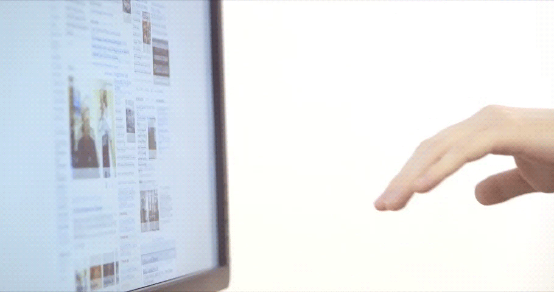

General Tips & Advice
- By moving a finger forward you can make it active, which will turn the cursor green.
- As the cursor starts to become active, the ring shaped cursor will fill in to a solid circle.
- The Leap Motion Controller is very sensitive. Make small movements to be relaxed and precise.

General Tips & Advice for Clicking
- Move your finger towards the screen until the cursor turns green, then move back promptly (as if tapping the air or an invisible touch screen).
- Try to make your movements gentle; strong motions will work, but are more difficult to sustain.
- Try resting your elbow while clicking for maximal comfort.
General Tips & Advice for Scrolling Horizontally
- Extend two or more fingers from your hand with a visible separation between them.
- Move them towards the screen until the cursors turn green, then move your finger side to side to scroll horizontally.
- When you want to stop scrolling just pull your hand back a tiny bit.

General Tips & Advice for Scrolling Vertically
- Extend two or more fingers from your hand with a visible separation between them.
- Move them towards the screen until the cursors turn green, then move your finger up and down to scroll vertically.
- When you want to stop scrolling just pull your hand back a tiny bit.

General Tips & Advice for Zooming
- Make sure your hands are next to each other. The Leap Motion Controller cannot detect if one hand is above the other.
- Move both fingers forward towards the screen until both cursors turn green. Then pinch in or out to zoom and when you are done move your hands backward a little.
- You can do repeated zooms by moving your arms as if you are swimming through the air. Swim forward to zoom in. Swim backward to zoom out.